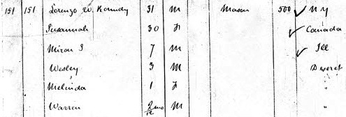

Chapter 4
The Saints sought peace and a home away from all the persecutions of the past. At last they were in the valley of the Great Salt Lake with the promise of a new life. This new life, however, was just the beginning of much hard work and new challenges. In the past, the members of the church were always near established civilization and other people. Now they were much more isolated, by choice, and had the challenge of survival, relying only on themselves and the Lord. There were a few rugged individuals in this region and the native Indians, but for a number of years, they faced their challenges of the harsh land and the need to accommodate the many other Saints who came here for refuge. The Roundy family were key people in this survival and the work of the Kingdom of the Lord.
As Shadrach was involved in the leadership of the new community, Lorenzo was getting settled with his new wife and his young son, Myron. It is recorded that Lorenzo and others were re-baptized by Shadrach Roundy on December 5th, 18471. It was the practice at this time and over the next few decades to baptize people again as a new clean start.
The lots that the Roundy family lived on in the next few years were found between the streets currently known as 4th West and 2nd North in Salt Lake City. They most likely lived in the Old Fort at first where there was safety from the Indian attacks, but then moved to these new lots by the early part of 1848. Lorenzo and Susannah's first child, Wallace Wesley was born here in February or March 16th 1848. Patty Sessions was the midwife.2 Later in the year it is recorded that the family lived on Block 191, on 500 West at about 225 North, in the Sixteenth Ward3. Their time in Great Salt Lake City was short however, because by the following spring we find them among the families who settled the Centerville area, one and a half miles north of the Deuel Creek Settlement, on the stream later known as Ricks Creek.4
Lorenzo and Susannah had their second child born in their new place in Centerville that summer, on July 5th. Her name was Malinda Elizabeth Roundy.
An interesting description of Lorenzo's personality is described in the "Roundy Family in America" book by Everett Roundy: "He was a natural leader, of genial personality and athletic physique. He built roads, bridges and schools. To his wife, Susannah, much credit was due for her thrifty, practical management of their home in those days of frugal living, as Lorenzo was of an easy-going nature, somewhat inclined to be careless with his own possessions, yet seeming to prosper when the odds were against him. It is said that 'while Lorenzo laughed and had a joke to tell, Susannah scolded and had no time for frivolity,' apparently assuming the family worries herself."5
The U.S. Census records for Davis County6 lists the family as Lorenzo (31), Susannah (30), Miron S. (7), Wesley (3), Melinda (1) and Warren (2 mos). It is likely that this is really Their new son, Napoleon Bonaparte Roundy, who was born Feb. 5, 1851. Brigham Young requested that the census take place on April 1, 1851,7 and that would match his age. It also matches the ages of several of the others in the extended family.
It appears that Lorenzo and family had a couple of years of uninterrupted life at this point. They arrived in Centerville (as it was later called) in 1849 and enjoyed the pastoral life there, with Napoleon and then Matilda Ann born, she coming in to the world on October 14, 1852, bringing their family now to 5 children. The Deseret News reports on February 23 of 1852 that Lorenzo is a member of the Second Quorum of Seventies, Davis County8. Also during this time, on March 29, 1852, Lorenzo and Susannah were sealed in a ceremony officiated by Orson Pratt in the President's Office in Salt Lake City9. Lorenzo is listed again in February of 1853 and also 1854 as a member of the Second Quorum of Seventy, living in Davis County10. The family built their homes here and farmed along Ricks Creek. Others of the family also lived around here and it appears that Shadrach had a farm here, though he continued to live in Great Salt Lake City for the rest of his life. The next big change in their lives, though came beginning with October Conference of 1853.
1 Church of Jesus Christ of Latter-day Saints, Early Church Information Files. Record No. 1808, page 17. Also referred to in Mounteer, "Shadrach and Betsey Roundy, p 243.
2 Smart, Donna Toland, ed. "Mormon Midwife, The 1846-1888 Diaries of Patty Bartlett Sessions." Logan Utah: Utah State University Press, 1997, p 106; quoted by Mounteer,
3 Mounteer, "Shadrach and Betsey Roundy," page 273.
4 Mounteer, "Shadrach and Betsey Roundy," page 264, footnote 12.
5 "Roundy Family in America," Everett Roundy, pp 251-252
6 1850 Census Record: [image is available]
Family #151
Lorenzo W. Roundy 31 M Mason 500 N Y (birth place)
Susannah 30 F Canada
Miran S 7 M Ill
Wesley 3 M Deseret
Melinda 1 F "
Warren 2 mo/12 M "

7 Numerous sources, e.g. https://wiki.familysearch.org/en/Utah_Census.
9 Film #183393 part A, page 483
10 Deseret News 1853-02-19 p2, 1854-04-13 p4